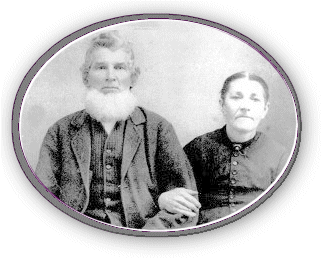

Daniel and Elizabeth Pegram McTheney
Giles County, Virginia
|
 |
Daniel McTheney, son of William McTheney and wife
Jane, married Elizabeth Pegram, daughter of George Pegram and wife
Wilcia (Willie) Harrison, on December 29, 1856 in Giles Co., Va.
Daniel McTheney was born c. 1829 in Alleghany Co., Va. Elizabeth Pegram,
born c. 1838 in Guilford Co., Va. She was the grand-daughter of John
Pegram and wife Parthenia Bell Pegram of Guilford Co., NC. |